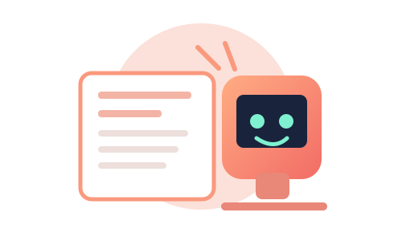

L'IA change les métiers. À nous de préparer la suite.
Automatisation, coopération humain–machine, nouvelles professions
: découvrez comment l'intelligence artificielle redessine le monde
du travail et les compétences de demain.
1 sur 4personnes exercent un métier exposé, à différents degrés, à l'IA
générative (OIT, 2025).
39 %des compétences pourraient évoluer d'ici 2030 selon les
employeurs interrogés (WEF, 2025).
3 trajectoiresdes tâches automatisées, des métiers transformés et de nouveaux
rôles qui apparaissent.
Comprendre · L'essentiel
Une révolution du travail, pas seulement de la technologie.
L'IA générative, la reconnaissance d'images et les systèmes
automatisés peuvent réaliser plus rapidement certaines tâches.
Mais leur impact dépend de la nature du poste, du secteur, des
compétences et des décisions humaines.
Pourquoi les métiers évoluent-ils ?
Les entreprises utilisent l'IA pour analyser des informations,
répondre à des demandes simples, rédiger des premiers brouillons
ou détecter des anomalies. Ces usages peuvent réduire les tâches
répétitives et modifier les processus de travail.
Dans d'autres situations, l'IA devient une aide : un médecin
conserve sa responsabilité clinique, un développeur vérifie le
code produit et un enseignant accompagne l'apprentissage. De
nouveaux besoins apparaissent aussi : fiabilité des modèles,
sécurité, éthique et gouvernance.
Il s'agit de tendances et de scénarios, pas d'une promesse de
disparition de professions entières.
Explorer les parcours
Trois façons dont l'IA transforme les professions.
Choisissez une catégorie pour découvrir les technologies en jeu,
des métiers concrets, les risques et les compétences utiles.

01 · Automatisation
Les métiers en voie de disparition
Les activités répétitives, fortement standardisées et
prévisibles sont plus facilement prises en charge par les
logiciels intelligents.
L'exposition à l'IA ne signifie pas automatiquement suppression
d'emploi : beaucoup de professions se réorganisent autour de
nouvelles tâches et compétences.